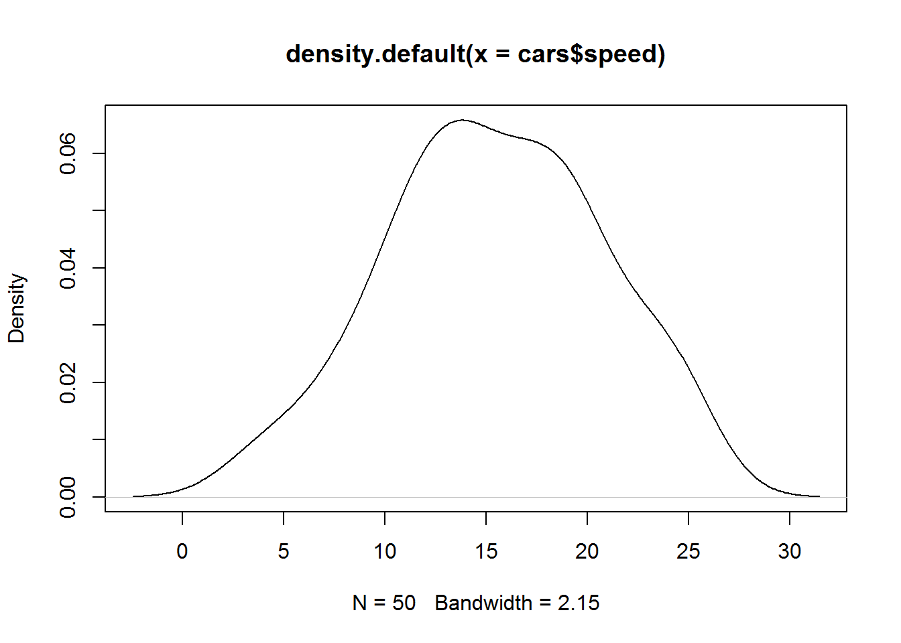
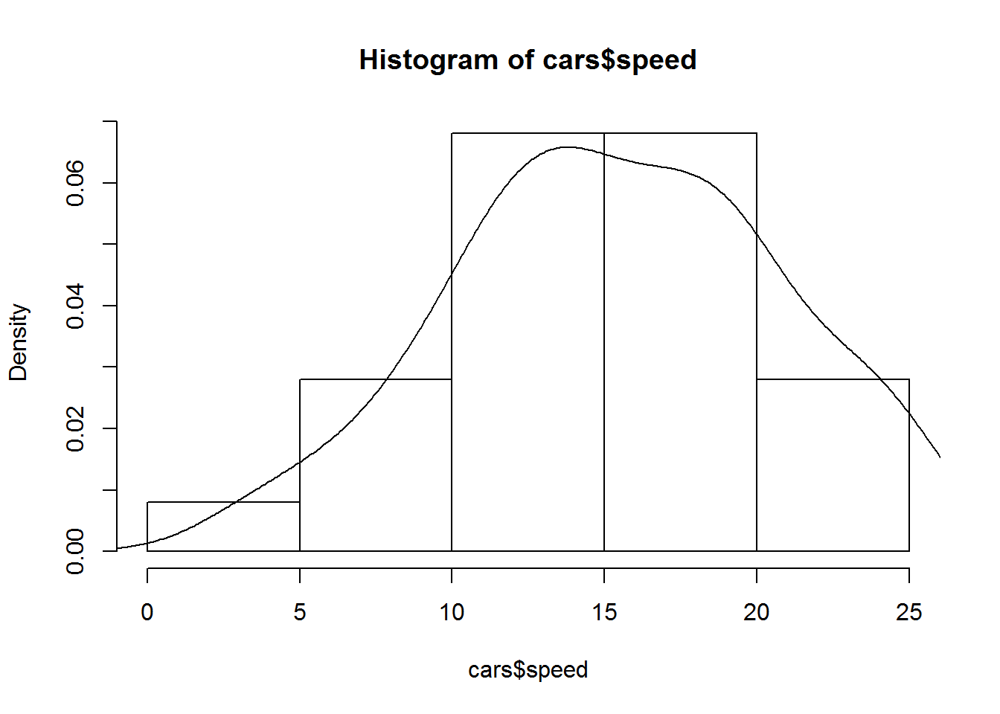

Se proporcionara informacion sobre como construir una funcion de densidad.
## se leen primero los datos
library(xtable)
print(xtable::xtable(cars),type="html",html.tableattributes="border=0") ## Contruye la tabla## <!-- html table generated in R 3.4.1 by xtable 1.8-2 package -->
## <!-- Sun Mar 11 21:11:41 2018 -->
## <table border=1>
## <tr> <th> </th> <th> speed </th> <th> dist </th> </tr>
## <tr> <td align="right"> 1 </td> <td align="right"> 4.00 </td> <td align="right"> 2.00 </td> </tr>
## <tr> <td align="right"> 2 </td> <td align="right"> 4.00 </td> <td align="right"> 10.00 </td> </tr>
## <tr> <td align="right"> 3 </td> <td align="right"> 7.00 </td> <td align="right"> 4.00 </td> </tr>
## <tr> <td align="right"> 4 </td> <td align="right"> 7.00 </td> <td align="right"> 22.00 </td> </tr>
## <tr> <td align="right"> 5 </td> <td align="right"> 8.00 </td> <td align="right"> 16.00 </td> </tr>
## <tr> <td align="right"> 6 </td> <td align="right"> 9.00 </td> <td align="right"> 10.00 </td> </tr>
## <tr> <td align="right"> 7 </td> <td align="right"> 10.00 </td> <td align="right"> 18.00 </td> </tr>
## <tr> <td align="right"> 8 </td> <td align="right"> 10.00 </td> <td align="right"> 26.00 </td> </tr>
## <tr> <td align="right"> 9 </td> <td align="right"> 10.00 </td> <td align="right"> 34.00 </td> </tr>
## <tr> <td align="right"> 10 </td> <td align="right"> 11.00 </td> <td align="right"> 17.00 </td> </tr>
## <tr> <td align="right"> 11 </td> <td align="right"> 11.00 </td> <td align="right"> 28.00 </td> </tr>
## <tr> <td align="right"> 12 </td> <td align="right"> 12.00 </td> <td align="right"> 14.00 </td> </tr>
## <tr> <td align="right"> 13 </td> <td align="right"> 12.00 </td> <td align="right"> 20.00 </td> </tr>
## <tr> <td align="right"> 14 </td> <td align="right"> 12.00 </td> <td align="right"> 24.00 </td> </tr>
## <tr> <td align="right"> 15 </td> <td align="right"> 12.00 </td> <td align="right"> 28.00 </td> </tr>
## <tr> <td align="right"> 16 </td> <td align="right"> 13.00 </td> <td align="right"> 26.00 </td> </tr>
## <tr> <td align="right"> 17 </td> <td align="right"> 13.00 </td> <td align="right"> 34.00 </td> </tr>
## <tr> <td align="right"> 18 </td> <td align="right"> 13.00 </td> <td align="right"> 34.00 </td> </tr>
## <tr> <td align="right"> 19 </td> <td align="right"> 13.00 </td> <td align="right"> 46.00 </td> </tr>
## <tr> <td align="right"> 20 </td> <td align="right"> 14.00 </td> <td align="right"> 26.00 </td> </tr>
## <tr> <td align="right"> 21 </td> <td align="right"> 14.00 </td> <td align="right"> 36.00 </td> </tr>
## <tr> <td align="right"> 22 </td> <td align="right"> 14.00 </td> <td align="right"> 60.00 </td> </tr>
## <tr> <td align="right"> 23 </td> <td align="right"> 14.00 </td> <td align="right"> 80.00 </td> </tr>
## <tr> <td align="right"> 24 </td> <td align="right"> 15.00 </td> <td align="right"> 20.00 </td> </tr>
## <tr> <td align="right"> 25 </td> <td align="right"> 15.00 </td> <td align="right"> 26.00 </td> </tr>
## <tr> <td align="right"> 26 </td> <td align="right"> 15.00 </td> <td align="right"> 54.00 </td> </tr>
## <tr> <td align="right"> 27 </td> <td align="right"> 16.00 </td> <td align="right"> 32.00 </td> </tr>
## <tr> <td align="right"> 28 </td> <td align="right"> 16.00 </td> <td align="right"> 40.00 </td> </tr>
## <tr> <td align="right"> 29 </td> <td align="right"> 17.00 </td> <td align="right"> 32.00 </td> </tr>
## <tr> <td align="right"> 30 </td> <td align="right"> 17.00 </td> <td align="right"> 40.00 </td> </tr>
## <tr> <td align="right"> 31 </td> <td align="right"> 17.00 </td> <td align="right"> 50.00 </td> </tr>
## <tr> <td align="right"> 32 </td> <td align="right"> 18.00 </td> <td align="right"> 42.00 </td> </tr>
## <tr> <td align="right"> 33 </td> <td align="right"> 18.00 </td> <td align="right"> 56.00 </td> </tr>
## <tr> <td align="right"> 34 </td> <td align="right"> 18.00 </td> <td align="right"> 76.00 </td> </tr>
## <tr> <td align="right"> 35 </td> <td align="right"> 18.00 </td> <td align="right"> 84.00 </td> </tr>
## <tr> <td align="right"> 36 </td> <td align="right"> 19.00 </td> <td align="right"> 36.00 </td> </tr>
## <tr> <td align="right"> 37 </td> <td align="right"> 19.00 </td> <td align="right"> 46.00 </td> </tr>
## <tr> <td align="right"> 38 </td> <td align="right"> 19.00 </td> <td align="right"> 68.00 </td> </tr>
## <tr> <td align="right"> 39 </td> <td align="right"> 20.00 </td> <td align="right"> 32.00 </td> </tr>
## <tr> <td align="right"> 40 </td> <td align="right"> 20.00 </td> <td align="right"> 48.00 </td> </tr>
## <tr> <td align="right"> 41 </td> <td align="right"> 20.00 </td> <td align="right"> 52.00 </td> </tr>
## <tr> <td align="right"> 42 </td> <td align="right"> 20.00 </td> <td align="right"> 56.00 </td> </tr>
## <tr> <td align="right"> 43 </td> <td align="right"> 20.00 </td> <td align="right"> 64.00 </td> </tr>
## <tr> <td align="right"> 44 </td> <td align="right"> 22.00 </td> <td align="right"> 66.00 </td> </tr>
## <tr> <td align="right"> 45 </td> <td align="right"> 23.00 </td> <td align="right"> 54.00 </td> </tr>
## <tr> <td align="right"> 46 </td> <td align="right"> 24.00 </td> <td align="right"> 70.00 </td> </tr>
## <tr> <td align="right"> 47 </td> <td align="right"> 24.00 </td> <td align="right"> 92.00 </td> </tr>
## <tr> <td align="right"> 48 </td> <td align="right"> 24.00 </td> <td align="right"> 93.00 </td> </tr>
## <tr> <td align="right"> 49 </td> <td align="right"> 24.00 </td> <td align="right"> 120.00 </td> </tr>
## <tr> <td align="right"> 50 </td> <td align="right"> 25.00 </td> <td align="right"> 85.00 </td> </tr>
## </table>plot(density(cars$speed)) ## Grafica la funcion de densidad
hist(cars$speed, freq = FALSE)
lines(density(cars$speed))